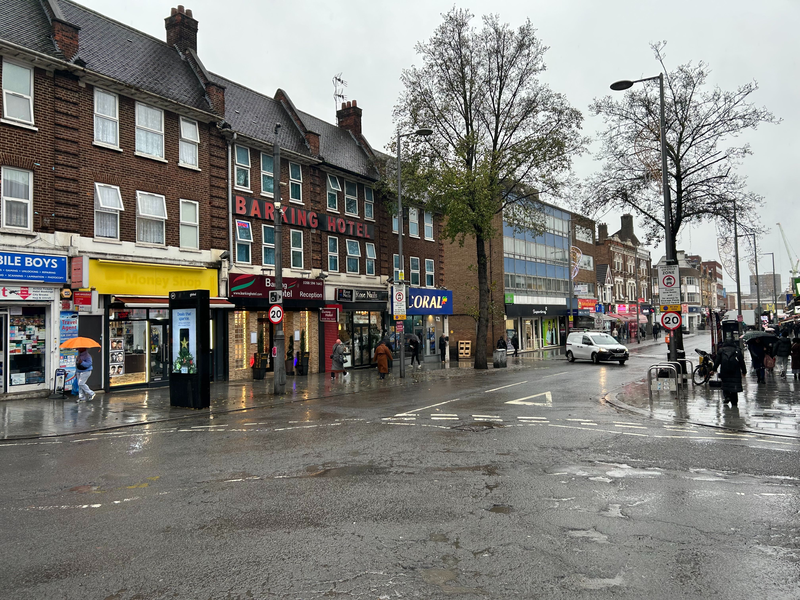

Our Service Area
We operate throughout Barking and surrounding areas.


Planning a concrete foundation project? Get in touch and tell us about your job requirements. Whether you're planning a garage, extension, garden building or another residential project, we'll be happy to discuss your requirements.
We operate throughout Barking and surrounding areas.